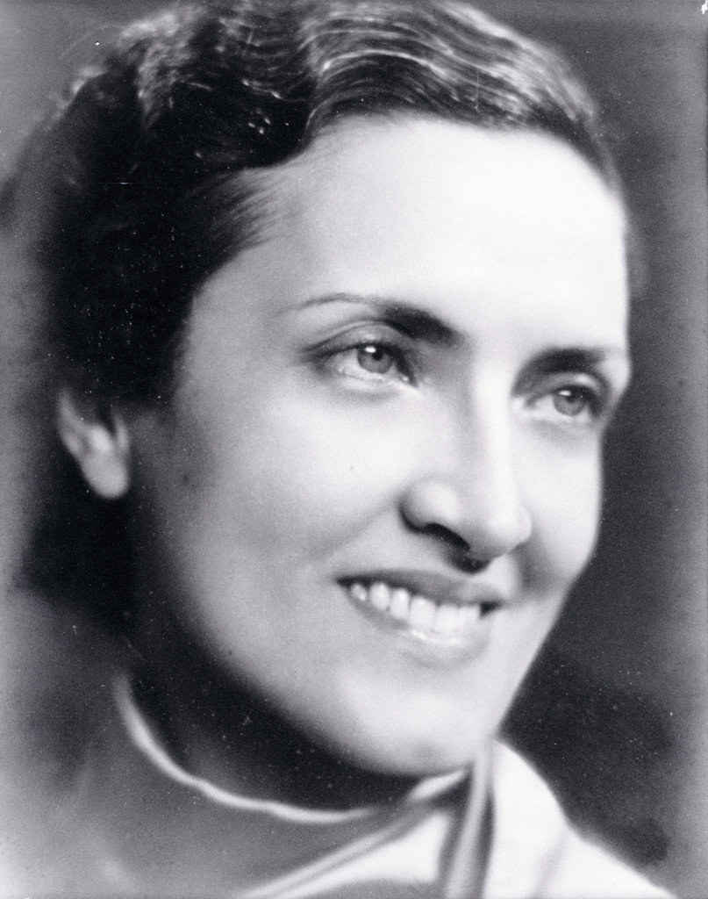

Cecília Meireles foi uma importante escritora, poetisa e educadora brasileira. Ela nasceu em 7 de novembro de
1901, no Rio de Janeiro, e faleceu em 9 de novembro de 1964.
Ela começou a escrever ainda jovem e se destacou principalmente por seus poemas, que abordavam temas como a
vida, o tempo, a natureza, a solidão e a morte. Sua poesia possui uma linguagem delicada e muita musicalidade.
Entre suas principais obras estão “Viagem”, “Vaga Música”, “Mar Absoluto” e “Romanceiro da
Inconfidência”.
Além da literatura, Cecília também trabalhou como professora e teve grande importância na educação brasileira.
Atualmente, é considerada uma das maiores poetisas da literatura brasileira.